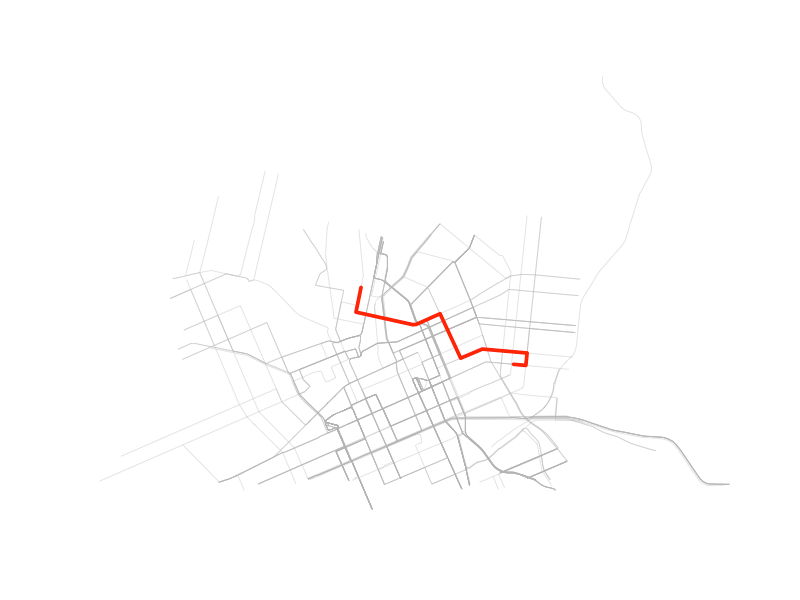

Create a temporary directory and copy example OSM PBF file into it
osrm_temp_dir <- file.path(tempdir(), paste0("osrm-data-", Sys.getpid()))
dir.create(osrm_temp_dir, showWarnings = FALSE, recursive = TRUE)
internal_pbf <- system.file("extdata/cur.osm.pbf", package = "osrm.backend")
file.copy(from = internal_pbf, to = osrm_temp_dir)Start local OSRM server
Start the server with osrm_start() function pointing to the temporary directory created above. It will automatically check if OSRM Backend binaries are installed, and if not, it will install the latest version, it will also automatically prepare the routing graph from the OSM PBF file if not already done and start the server. If any of the steps are unnecessary, it will skip them, so running this funciton will not lead to re-downloading of OSRM binaries or re-processing of the OSM PBF file if already done.
osrm_start(osrm_temp_dir, verbose = TRUE)Tip
You can check if server is running with
osrm_servers():# A tibble: 1 × 7 id pid port algorithm started_at alive has_handle <chr> <int> <int> <chr> <dttm> <lgl> <lgl> 1 osrm-28034-5001-20251103122904.133 28034 5001 MLD 2025-11-03 00:00:00 TRUE TRUEYou can kill the server with
osrm_stop()orosrm_stop_all()if you have started several servers.
Load spatial data
Load some spatial data from the OSM PBF file to sample points for routing and plot the street network:
Calculate route between sampled points
To use osrm package with the local server, you have to set the osrm.server option to point to the local server URL. The default port that osrm_start() uses is 5001, so the URL will be http://localhost:5001/. Then you can use any osrm function as usual, here we calculate a route between the two sampled points:
Simple feature collection with 1 feature and 4 fields
Geometry type: LINESTRING
Dimension: XY
Bounding box: xmin: -49.27156 ymin: -25.43082 xmax: -49.25396 ymax: -25.42358
Geodetic CRS: WGS 84
src dst duration distance geometry
3786_503 3786 503 5.55 2.6324 LINESTRING (-49.25534 -25.4...Plot the route on top of the street network
plot(st_geometry(osm_streets), lwd = 0.5, col = "grey70")
plot(st_geometry(route), col = "red", lwd = 5, add = TRUE)
Stop local OSRM server and cleanup
You can now stop the server:
Stopped OSRM server id=osrm-29557-5001-20251103124028.405 (pid 29557, port 5001).And remove the temporary directory:
unlink(osrm_temp_dir, recursive = TRUE)